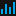
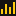

Lichess
Some links related to statistics I gathered about everyone's favorite chess site, lichess.org. To contact me, visit my lichess profile.
-
 Lichess Arena Rankings
These rankings are based on approximately half a million regularly-scheduled lichess arenas, ranging from hourly bullet arenas to yearly king of the hill arenas and titled arenas. See who scored the most trophies, the highest scores, who played in most events, and more! These rankings get updated regularly via automated scripts. (The code used to generate all these rankings is available on GitHub.)
-
Lichess Arena Statistics
Associated to the rankings webpage mentioned above, this page lists some plots and visualizations of overall statistics of all the arenas collected in these rankings. Compare average ratings between different format, draw rates between variants, and see which variants and tournaments saw the biggest participation over the years.
-
 Lichess Ladder
A ladder of the top Lichess players, ranked according to lifetime scores against other top players. Whereas ratings are volatile, and can go down quickly on good/bad days, these rating estimates are more stable, and may reflect relative strengths of top players better. Unsurprisingly, several public alts of the World Champion are on the top of the rankings, as well as some anonymous accounts.
-
Lichess Leaderboard - Titled Arenas
An animation of the total points scored over time for titled arenas. It shows the initial dominance of Magnus Carlsen, who regularly participated, and the rise of Alireza Firouzja and Andrew Tang. (Rankings based on data until September 2020.)
-
Lichess Leaderboard - Seasonal Marathons
Similar to the titled arenas, this shows which players scored the most points in seasonal marathons over time. People familiar with these marathons will not be surprised to see Lance5500 on top of these rankings. (Rankings based on data until September 2020.)
-
Lichess Leaderboard - Active Players
Rather than based on points gathered in different events, this animation illustrates which players played the most (standard) games on Lichess over time. Featuring the legend german11. (Rankings based on data until September 2020.)
-
Lichess Timeline - Popular Time Controls
This video shows how the favorite time controls on lichess evolved over time. As lichess introduced quick pairing pools (1+0, 3+0, 3+2, etc.), one can see a clear convergence to these time controls, and the initially popular 5+8 went out of fashion quickly. (Timeline based on data until September 2020.)
-
Lichess Rivalries - Magnus Carlsen
Over time Magnus Carlsen has played many late-night bullet marathons against other bullet experts, and this animation visualizes his scores against a few other top players over time. (Animation based on data until September 2020.)
-
Lichess Rivalries - Andrew Tang
Similar to the previous video, Andrew Tang has played many bullet marathons against other world class players, and this animation visualizes his scores against some of these players over time. (Animation based on data until September 2020.)